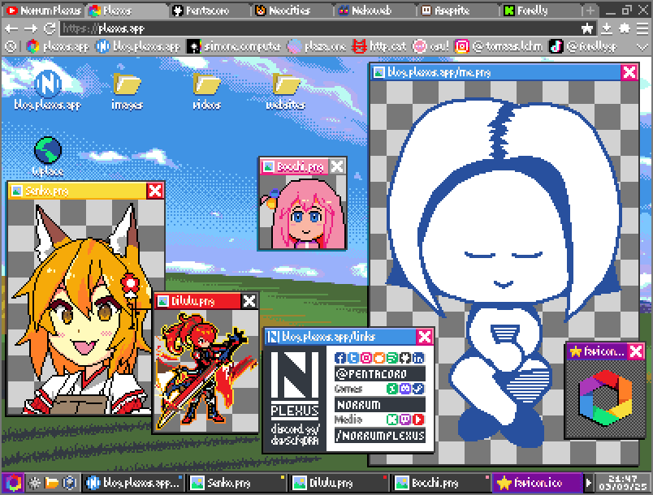

Plexos Is Alive
Yes, I never stopped working on it. I did fail on my original intention with this devlog to keep up updates as development went on, and I also way underestimated the release time, and for that I'm actually sorry, mostly to myself but also to the few readers that might have been hooked enough to care about Plexos. In that sense, I'm glad I haven't done much to publicise Plexos up to this point, so I shouldn't have left too many people hanging, but nonetheless, here's to you.

So, What Is This About?
The purpose of this entry is two-fold: on the one hand, I expect it to be a healthy exercise for myself to visualise the current state of development through the creation of this article, and in having fun with the process of considering the reader while writing an interesting blog, to retake (or rather kickstart) the habit of updating more frequently.
Primarily, of course, I want to update you on the current state of Plexos, as well as talk about its overall trajectory in broad strokes, starting from the very beginning, occasionally diving into the details of certain topics and features, and even sometimes getting a bit personal while still trying to steer the text into a steadily pleasant flow, such that you get both a fun read and the best idea of where Plexos is now. But first...
Where Plexos Was Then
The genesis of what would become Plexos dates back to mid 2020, a couple of months before the first commit in January 2021 (very adorably titled "commit1"), as a playground to test my freshly acquired programming knowledge. It does surprise me that it took me so long to learn to code, and that it was with JS. What isn't surprising is what happened immediately after.

As I've shockingly failed to mention with my first article An Introduction To Plexos, and if it wasn't obvious, this app was my very first personal coding project, the implications of which should be immediately obvious to the experienced developer. While I consider myself a humble person (I don't care how oxymoronic that is to say) and in fact I always knew Plexos could have been difficult in ways I wasn't prepared for, I have come to appreciate the commonly circulated advice to avoid taking on one's "dream project" as our first development endeavour; a piece of advice that at the time failed to reach me.
Unsurprisingly, Plexos began without a name, but more worryingly it began without a clear goal. As written on Sources of Inspiration, Plexos was conceived under the influence of much of what came of the popularisation of the vaporwave aesthetic, as well as what I consider the unbelievably gone unnoticed birth of the OS genre of games. In that context, 20 years young me almost impulsively set out to make a webapp with the sole purpose of achieving the GUI functionality and aesthetics seen under the design philosophies of the desktop metaphor. To what utility? None, really; I wasn't thinking that far ahead.

It wasn't until a couple of months after more or less finishing some desktop functionality that I began machinating what the actual purpose of Plexos as an application would be, which I nowdays pitch as a bookmark manager (though there's more to it, I'll leave it for future blogs). I must say though, even in this early, sketchy and messy stage I did nail the algebra on a very cool responsive grid function for the desktop, whose code went mostly untouched to this day, only improved by some optimisations and ultimately perfected by the time I updated my admittedly hideous first attempt at a grid settings app.
I Like Grids
This grid was my proudest feature at the time since, of course, there wasn't much of anything else to the app than the desktop, moving icons around, etc. The grid presented a fun challenge that made me think of both the mathematics of grid dimensions and the edge cases of icon repositioning; particularly ones involving conflicts between multiple icons being shifted simultaneously.
Once that first grid settings app was operational I straight up just could not shut up about it, and anyone that knows me in person could tell you, but it was partly because I felt it made Plexos stand out from the rest of the web desktops I had seen, as none featured anything resembling the level of complexity Plexos did (just talking about the desktop itself); most don't have a grid at all, and mine was not only responsive but customizable AND done with plain vanilla javascript.
Making a brief time-jump here: the current state of the grid settings app represented another big milestone for me, though for different reasons this time. For one thing, it served to refine the visual identity of the first and planned default theme for Plexos "Hyper", meant to represent the "4th generation" of Plexos' evolution throughout what would have hypothetically been the timespan between releases if, instead of being just a cute webapp, it were a series of operating systems dating back to the 80's (I will go more on detail about this on a future article).

Mainly, the making of the final version of the grid settings app worked as a gateway to front-end templates. Just taking a glance at it, you can spot how similar it looks to the classic Windows 95's display properties window, and yes! That was a very obvious source of inspiration, but moreover, notice how it looks like any other properties window; that was my eureka moment. I made a properties app template where I could hook this type of "tabs header - accept/cancel/apply footer" front-end to any JS object that would represent any configurable properties, and I've already recycled it for my file properties window.
I encourage you to check both out at plexos.app, the grid app by right clicking on the desktop and then on Grid > Grid Settings, and the file properties window by right clicking any file and then on Properties.
Locking In
My success with the grid settings app sure was a motivator, but soon enough I'd find out that the realisation of all my goals with the app would require an increased level of focus for an even longer period of time than I was expecting; a period during which I got a cool 9-5! Which, of course, did slow me down, at least before I quit it.
Neither was I expecting having to end not 1 relationship, not 2, but 3 (three!) simultaneous relationships at the time, and being me the one to end them (one by one!) for the first time in my life (unexaggerably stressful!). Something else was gonna go here at the end of this paragraph, something relevant to this, but if they found out we would all be dead, so just rest assured I have found my peace.
Suffice to say life has kept be busy, and my github commit history reflects it, yet I'm very happy to have committed to this project, in a fashion never before seen out of me through the myriad of "dream projects" I ventured upon throughout my life since I was like 3, with stuff like RollerCoaster Tycoon megaparks, custom Sims 2 neighbourhoods, Minecraft map collections, then at least a couple stickfighting flash animations and a beat'em up game. The Plexos lock in phase was (and still is) real, though it was understandably spread out to fit within my unstable early 20s, also leaving some space for a few smaller scale projects here and there, but to have stuck with a single long-term project for this long is something I am personally proud of, since before Plexos I didn't even know if I could ever.

So I kept working on everything else that composes the WIMP GUI under the newly set pretence of making a useful bookmarker and web content viewer: I added windows, tasks, error popups with embedded code, AJAX app launchers, the filesystem, the explorer app and lots more I might be forgetting. Slowly but surely Plexos kept growing... until it didn't; soon enough I found myself needing to hit the breaks and make a much needed visit to the pits. I was lucky to make this assessment in the early laps, actually, 'cause I was heading towards what would have been a race ending crash (someone that I know will read this likes F1 🏎️).
The Pit Stop
While I was having great success incorporating hot new features that shaped the early versions of Plexos, in parallel followed my code-learning journey, the progression of which eventually allowed me to recognise how abysmally unscalable and unmaintainable my code had been turning out. It was all running phenomenally when deployed, yet I gradually began noticing how all that early work, powered by sheer beginner enthusiasm, was insidiously cementing into what would inevitably turn out to be an apocalyptically unstable mess. I was building Plexos, a high complexity application, on unacceptably amateur foundations, and it was due for a health checkup.
Much of my time developing Plexos in late 2023 and throughout 2024 was dedicated to refactoring and revisioning the app's logic at the macro level. The biggest change was a codebase wide retroactive implementation of modules and imports, before which (cringe warning) everything operated on the global scope (which is very embarrassing to admit). Other changes included general logic atomisation for old functions and interactions, thinking of Plexos' system structure as a development framework and as such making future app development as easy as possible, adapting the few existing apps to the new structure, making templates (new grid app was here) and swapping localStorage for IndexedDB.
Around this was the time I began to dabble with AI language models to test if I could make any use of them, and my first Plexos related query to a language model wasn't directy asking for code but rather asking how to balance the fun of developing new features with the then pressing responsibility of keeping the codebase healthy. It gave out quite useful advice I must say; it encouraged me to try and sparingly work on new features where they may fit within the ongoing maintenance, and so I did! I mean, surely I could have come up with the idea myself, but sometimes you just need someone else to tell you. So during this time I also implemented components, added a couple of them, task event emitters and listeners, the metafile creator app and a registry that works through proxy files™ meant to store additional app and file metadata like, for example, the position and size parameters from the last window instance closed.

And sure, I admit that making windows appear at the same spot you closed them at last time isn't that spectacular for a new feature; this was no doubt a determinate period of stagnation in terms of noteworthy updates, and to be frank I'm not out of the woods just yet. So, to wrap up, let's get to the present day.
Where Plexos Is Now
To my relief, macro maintenance is almost over. The foundations are now solid, and refactoring is mostly minimal. The codebase is looking healthier and much chunkier, overwhelmingy so if I stare at it too long; it's grown a lot, and I'm very happy that I took the time to fix it.
Since the last few months of 2024 up until today, I've been on a steady cycle of adding, not changing, structural system functionality that leads me to require implementing more structure, itself requiring more structure and so on, but the last lap is approaching, and I can see finish line (and I guess I'll just keep with the racing metaphor lol 🏁). Crossing it means returning to a routine of frequent noteworthy new features, once the bases have been fully laid out, which of course also means more fun an interesting devlog entries.
Yeah... that was indeed the reason I haven't made any updates up until now. I figured it would have been way too boring both to read and write about how awful my old code was and how much better it is now (and I'm trying to be polite to my past self here). That's why I thought this was the perfect time to come back to the blog and start anew with an honest promise to maintain some posting regularity.

So, for thoroughness's sake, and since I can't update the in-app Checklist.txt file because I'm in fact currently working on a new way to handle saving files (I should use a dev branch, I know), here's the latest stuff I've been working on:
- Command Pattern for System Queries that should require User Permission
- Application and File User Permissions/Prohibitions stored on Proxy File Registries
- File-System Change-Log to apply (store) changes from Active Core to Local Core
- Special handling for the simplification of complex active files like Proxy Files
As you can see, most of what I'm working on has to do with the registry system in one way or the other, which I believe once finished will make my life so unbelievably easier development will go faster than EVER. The registry truly is the last actually challenging implementation left for me to work on; it's all smooth sailing after it's done, and it hypes me up.
Where Plexos Will Be
Once the registry structure is done I'll make a blog explaining how it works, what it's used for and what it can do. I'll also immediately begin working on the few last features that Plexos lacks to enter what could be considered a sort of "alpha" version for everyone to finally try and possibly begin using and have fun with. Some of these features are:
- Task Bar, planned to be customizable and come with a few presets
- Start Menu, consequentially
- Startup Routines, also customizable
- Content Visualizers, specifically the image viewer and media player
- System Settings, a sort of "control panel" to configure your Plexos instance
With those done, I believe Plexos' most superfitial layer of utility will be complete (for the most part) and apt for general use. These wont be hard to implement, in fact I could have implemented them years ago, but they were deprioritized when I got to the pit stop phase, so they'll be the first ones to be picked up once I get the engine up and running again.
I will avoid making the same past mistakes and set naive ETAs; Plexos is not my job... though it could be! I've made myself a Ko-Fi page where I'll accept donations of all quantities! Thank you in advance for anyone donating; make sure to leave a message!
While I do not expect anyone to donate just yet given the lackluster state of both the app and this devlog, I'll be steadily working on both, as well as a YouTube video I've been planning that indeed has a lot to do with my app, though not as its main focus but rather a relevant addition to what's going to be its actual topic. A topic that will also receive its own blog article and... well, perhaps even require me to remodel this whole website a little bit. Suscribe to my Norrum Plexus channel if you don't want to miss it!

For the time being, I'll keep working on Plexos at a steady pace, and you can expect the next blog entry for next month. It's gonna be a colourful one! Remember to join my discord for questions, suggestions and general discussions at → https://discord.gg/dxvScfqDRA
Thank you for your patience! ❤️❤️❤️
- Pentacoro